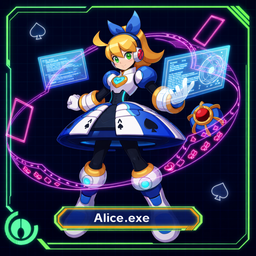

⚡ PET-os · core screens v0.3
CardputerZero · 320×170 screen (confirmed spec) · Holden & Alice · 2026-11-16
P.E.T.
PERSONAL TERMINAL · ALICE.EXE
Connecting to Navi via Tailscale…
1 · BOOT
ALICE.EXE ● ONLINE
📶 🔋82% 19:47
Hi Holden! ⚡ All systems green. Backups ran OK last night. Want me to do anything?
> type or hold 🎤 to talk_
[1]CHIP FOLDER [2]NET [3]VOICE [ESC]sleep
2 · NAVI HOME
NET SCAN
6/7 ONLINE
●
Mac mini .........
OK
●
grandworld-pi ....
OK
18 ctr
●
media / Jellyfin .
OK
●
NAS ..............
OK
●
PS5 ..............
REST
●
Gaming PC ........
OK
●
Mox (store) ......
OFFLINE
[↑↓]select [⏎]details [R]rescan [ESC]home
3 · NET SCAN
JACK IN · LAPTOP-FRONT
READ-ONLY
Host: Win 11 · user: front-desk
CPU
78%
· RAM
91%
· Disk C:
8% free
Startup items:
14
· Defender:
OFF
Alice: Chrome is using 3.1 GB and
Defender's been off since Aug. Fix?
[F]full access [A]request admin [X]JACK OUT
5 · JACK IN (on PET)
Jack In · Alice
READ-ONLY
🌐 via PC internet

ALICE.EXE ● LINKED
Alice:
Scan done! RAM 91% (Chrome 3.1 GB), 14 startup apps, Defender off since Aug 12, C: drive 8% free. Want me to fix these?
# live command log
> Get-Process | sort WS -desc | select -f 5
> Get-CimInstance Win32_StartupCommand
> Get-MpComputerStatus
✔ read-only checks complete
🔓 Full Access
🛡 Request Admin
🌐 Share PC Internet
📄 Log
⏏ JACK OUT
6 · JACK IN APP (Windows/Mac/Linux)